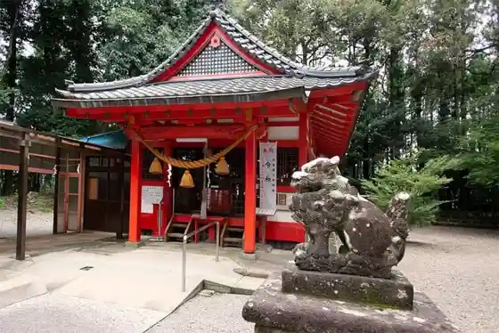
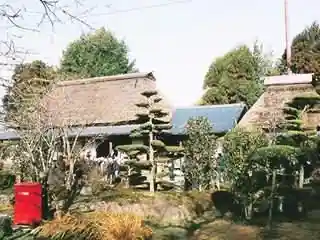
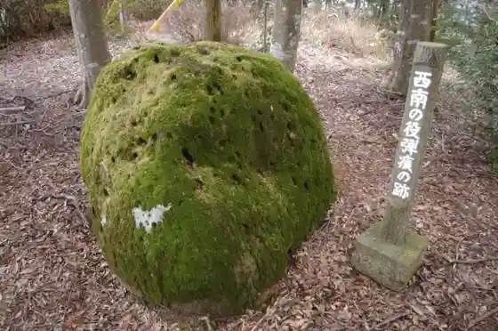
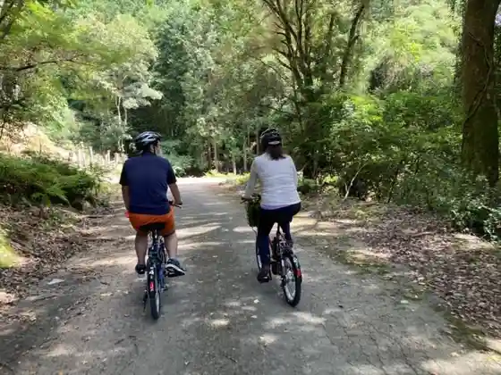

Sogi no Taki Park
Isa, Kagoshima · 0995-28-2600 · Official / source link
Koriyama Hachiman Shrine (Shochu Rakugaki)
Isa, Kagoshima · 0995-23-1311 · Official / source link

Kedoin Ie House
Isa, Kagoshima · 0995-22-1613 · Official / source link

Taka Kumayama
Isa, Kagoshima · 0995-22-1613 · Official / source link

Okiso So Gorge
Isa, Kagoshima · 0995-22-1111 · Official / source link

Ju So Seishonen Ryoko Village
Isa, Kagoshima · 0995-22-0959 · Official / source link
Tadamoto Park
Isa, Kagoshima · 0995-29-4113 · Official / source link
Sogi Hatsudensho Iko
Isa, Kagoshima · 0995-23-1311 · Official / source link
Kusumoto Kawa Keiryu Nature Park
Isa, Kagoshima · 0995-26-4636 · Official / source link
Hakozaki Jinja Honden Fu Kyuden
Isa, Kagoshima · 0995-26-1111 · Official / source link
Hana Mushiro
Isa, Kagoshima · 0995-28-2525 · Official / source link
Isa Buruberii Tsumi Tori Tourist Farm
Isa, Kagoshima · 0995-22-0313 · Official / source link
Oguchi Shuzo Daini Joryu Tokoro (Isa Densho Kan Eiroku)
Isa, Kagoshima · 0995-26-5500 · Official / source link
Yaso Iori
Isa, Kagoshima · 0995-28-2808 · Official / source link
CONTAINER VILLAGE 268
Isa, Kagoshima · 070-4753-6921 · Official / source link
O Niku no Chokubai Tokoro Isa Mise (Kyu Isa Ranch Chokubai Tokoro)
Isa, Kagoshima · 0995-29-3080 · Official / source link
Nuno Kei Shogakko Ato
Isa, Kagoshima · 0995-29-4113 · Official / source link
Ota no Higan Hana (Isa)
Isa, Kagoshima · 0995-29-4113 · Official / source link
Magoshi Market
Isa, Kagoshima · 0995-26-3755 · Official / source link
Yu no O Shiki Kurabu
Isa, Kagoshima · 0995-26-5707 · Official / source link